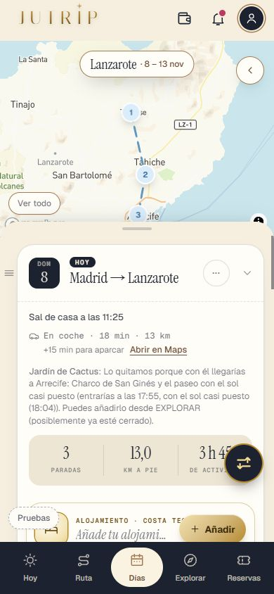
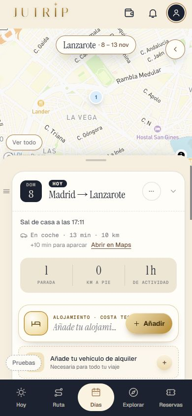
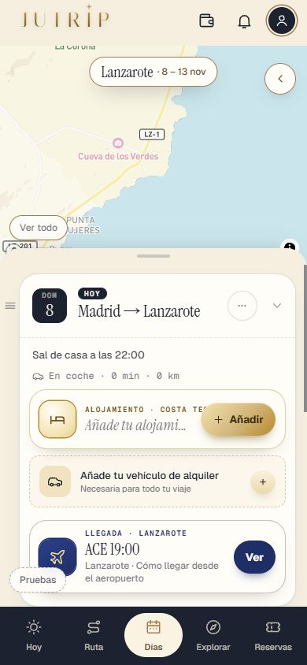
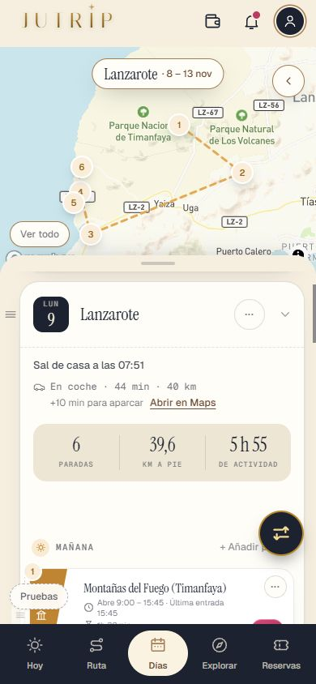
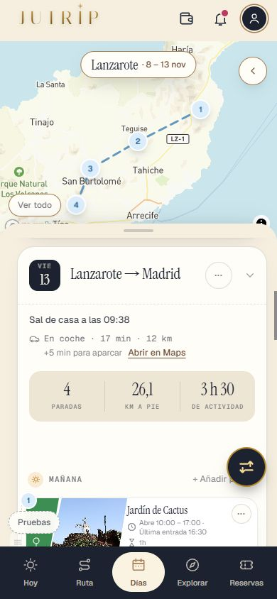
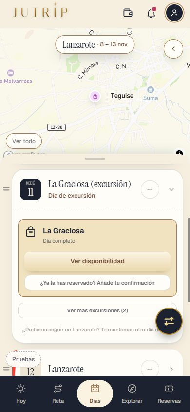
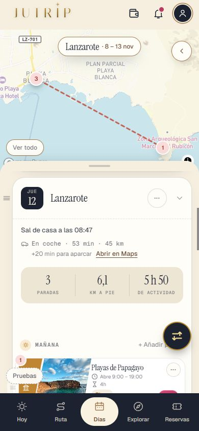
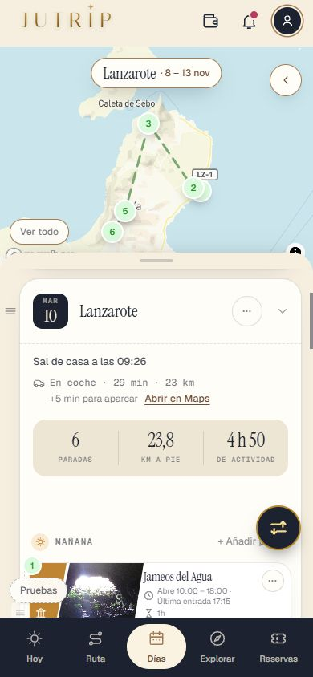
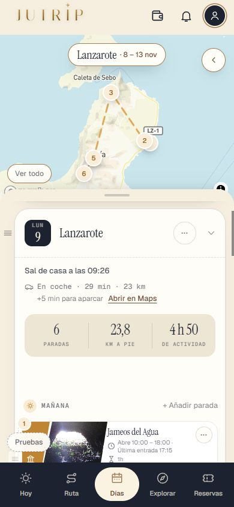

Repaso de la Tanda LL
El día de llegada y el de vuelta de Lanzarote (parte 1; Roma, parte 2, va después). Sigue OCULTO (solo administrador); Roma no cambia. Marca cada punto en tu teléfono cuando lo hayas comprobado (se guarda en este navegador).
0 · Antes de empezar (parte 1 · Lanzarote) ✅ Hecho — Prompt guardado (docs/dias/PROMPT_TANDA_LL.md, llegó entero hasta «reinicia el api-server»); los dos informes copiados a docs/llegadas/; Lanzarote sigue oculto; Roma sin cambios (muestra de 60 idéntica)Dos agentes en total: uno para los datos de restaurantes por día y los minutos de salir antes por zona, y yo para el motor. La LZ3b (retoques de Lanzarote) va después de esta tanda. Dónde: No es de móvil. 1 · La hora útil de llegada ✅ Hecho — Hora útil = aterrizaje + 45 min (equipaje) + 60 min (recoger el coche, solo alquiler) + trayecto a la zona + 60 min (instalarse)Con tu vuelo (08:25, Costa Teguise, alquiler): 08:25 + 45 + 60 + 15 + 60 = 11:25 (fila B). Con coche propio, 1 h menos. Sin zona se cuenta la más lejana del aeropuerto (Playa Blanca). Las constantes están en `_ll.json`. Dónde: DÍAS › día 1: «Sal de casa a las 11:25». 
2 · El día de llegada (filas A a F) ✅ Hecho — Filas A a F con sus listas por zona (las 6 zonas), el D3 (D4 en Playa Blanca) cuenta como hecho en A y B, el domingo con el mercadillo, sin horas muertas, nunca vacío si hay tiempoA: «Manrique en casa» entero; B: medio día con comida; C: una o dos paradas + atardecer + cena; D: solo el atardecer y la cena; E: solo la cena; F: sin ruta y sin cena. Si con la comida en su sitio se pasaría de las 15:00, se come primero cerca del alojamiento. Lo primero que sale si no cabe es el Jardín de Cactus. La Fundación nunca se pierde (el D3 solo desaparece del viaje si el día de llegada lo hace). Dónde: DÍAS › día 1 con distintas horas de llegada. 
✅ Hecho — Un día de llegada de la fila F (llegada de noche)Sin paradas y sin cena: la compra de la hora extra hace de cena. El día 2 es el norte de Manrique y el sur pasa al día 3. Dónde: DÍAS › día 1 y día 2 con la llegada a las 19:00 (hora útil 22:00). 
3 · El reparto de los días ✅ Hecho — El primer día entero es el sur volcánico, salvo tras una llegada de noche (E o F), que va el norte primeroAntes: «el día 1 es el D1 (Timanfaya) siempre». Tu viaje queda: domingo llegada («Manrique en casa» de domingo), lunes el sur, martes el norte, miércoles La Graciosa, jueves Papagayo y viernes la vuelta. Con el vuelo a las 17:00 o más tarde y el D3 sin hacer, su versión corta va el día de vuelta y entra el siguiente día de la tabla. Sin pase, todo igual que antes. Dónde: DÍAS: los 6 días del viaje. 
4 · El día de vuelta ✅ Hecho — Hora límite = vuelo − 2 h − 30 min − trayecto de la última parada al aeropuerto; paradas por zona y por la hora del vuelo; nunca vacío si hay tiempo; minutos de salir antes por zonaTu vuelo (19:40): coche devuelto en la T1 antes de las 17:10; mañana cerca con paradas, sin imprescindibles grandes y sin repetir lo del domingo (el Cactus, que se quitó el domingo, vuelve el viernes). Antes de las 14:00, solo el traslado con la tarjeta «Hoy vuelves a casa». El día de vuelta no lleva cena. `_llegada.json` guarda ahora los minutos de salir antes por zona (`salir_antes_por_zona`). Dónde: DÍAS › último día; el final del día dice a qué hora llegas a la T1 y cuál es el límite. 
5 · Las cenas y comidas según el día ✅ Hecho — Solo restaurantes que abren ese día de la semana; si no se sabe de ninguno abierto, «Cena cerca de tu alojamiento» sin nombre; también la comida de La GraciosaTodos los restaurantes llevan `cierra_dias` (de su horario). Los que no tienen el horario confirmado (15, p. ej. Liken, La Cofradía o Casa Cejas) no salen con nombre. Domingo: no SeBE; miércoles: ni SeBE (solo comidas) ni La Bohemia; La Graciosa el miércoles: El Veril (Casa Enriqueta cierra martes y miércoles). Varios horarios son de 2023: conviene confirmar La Bohemia y Villa Toledo antes del domingo. Dónde: Cualquier día: la cena y la comida. 
6 · Sin horas muertas ✅ Hecho — Sur volcánico: la comida no deja un hueco de más de 30 min (desde las 12:30); noviembre a marzo: Papagayo hacia las 10:00La comida de Timanfaya ya no espera a las 13:15: desde las 12:30, y si aun así sobra hueco se alarga la parada anterior (hasta 45 min). El día de Papagayo en invierno sale hacia las 8:47 (antes, a las 7:47). Dónde: DÍAS › lunes (sur) y jueves (Papagayo) de tu viaje. 
7 · El viaje de Eric como prueba fija ✅ Hecho — Aterriza 08:25 el domingo 8-nov y vuela el viernes 13-nov a las 19:40; Costa Teguise, coche de alquiler, con paseSale lo del apartado 6.1 del informe: domingo Teguise con el mercadillo (11:58) + comida + Fundación + Charco; lunes el sur (Timanfaya 09:00); martes el norte; miércoles La Graciosa; jueves Papagayo; viernes la mañana cerca y el coche en la T1 antes de las 17:10. DIFERENCIAS con el informe: el domingo el Cactus se quita primero (no cabe y vuelve el viernes); el viernes, otra mañana (Cactus, LagOmar, Campesino y Las Grietas) y llegas a la T1 hacia las 16:24, con 46 min de margen (el informe tenía 24); la comida del domingo en Teguise sale a las 13:13. Dónde: DÍAS: los 6 días. 8 · La app (para el pase) ⚠️ A medias — Adaptar los días de llegada y de vuelta a los vuelos es del pase, como hoy: «Sí, adaptarlos» rehace los días con el motor en cochePara un destino en coche, `adaptarVuelos.ts` rehace TODOS los días con `/api/rebuild-day` (zona, pase, coche y las horas de tu vuelo) en lugar de recortar el primero y el último como en Roma. No lo he probado con un vuelo guardado en RESERVAS desde la pantalla: las capturas ponen las horas con el ayudante de desarrollo `__rutaLanzarote({ vuelos })`. El día de vuelta se pide al motor solo con pase y con la hora del vuelo. Dónde: RESERVAS › vuelo de llegada y de vuelta (con tu pase), luego «Sí, adaptarlos». 9 · La prueba ✅ Hecho — pruebaTandaLL_LZ (filas A a F desde las 6 zonas en noviembre y julio, sin vacíos, sin imprescindibles, sin restaurantes cerrados, la vuelta a la T1 a tiempo, el viaje de Eric) y las pruebas viejas puestas al díaPruebas viejas con «antes → ahora → decisión de Eric»: `pruebaTandaLZ2a_A` (la llegada a las 11:00 y las cenas con 2-3 restaurantes), `pruebaTandaLZ2b1_A` (recoger el coche 60/0) y `pruebaTandaLZ1_C` (la sección «Tiempos que no cuadran» del informe de Mapbox ya no existía desde la LZ2b-1). Dónde: No es de móvil. Todas las capturas
ll_lz_eric_dia1_1 ll_lz_eric_dia2_1 
ll_lz_eric_dia3_1 ll_lz_eric_dia4_1 ll_lz_eric_dia5_1 ll_lz_eric_dia6_1 ll_lz_filaC_dia1_1 ll_lz_filaF_dia1_1 
ll_lz_filaF_dia2_1